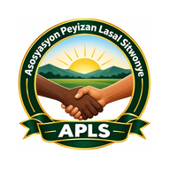

Enstale APLS sou aparèy ou
Inyon • Solidarite • Devlopman
📱 iPhone / iPad
- Ouvri lyen aplikasyon an nan Safari.
- Peze bouton Pataje / Share.
- Chwazi Add to Home Screen / Ajoute sou ekran dakèy.
- Konfime Add / Ajoute, epi ouvri ikòn APLS.
🤖 Android
- Ouvri lyen aplikasyon an nan Google Chrome.
- Peze meni ⋮ a.
- Chwazi Install app oswa Add to Home screen, selon aparèy la.
- Konfime epi ouvri ikòn APLS.
💻 Òdinatè
- Ouvri lyen aplikasyon an nan Chrome oswa Microsoft Edge.
- Nan ba adrès la oswa meni navigatè a, chwazi Install app / Enstale si opsyon an disponib.
- Sinon, itilize li kòm yon sit entènèt nòmal sou nenpòt navigatè modèn.
⚠️ Sa se demonstrasyon. Li ouvri sou tout twa kalite aparèy, men li pa senkronize done ant yo. Enfòmasyon tès yo sere lokalman nan chak navigatè. Pa antre non, nimewo telefòn, adrès, dokiman idantite oswa done finansye reyèl. Pou yon aplikasyon reyèl kote tout manm APLS pataje menm dosye, n ap bezwen yon baz done sekirize, kont pèsonèl ak otorizasyon pa wòl.